Pole placement or pole assignment is a major control design method for linear time-invariant systems.
gammasyn is a toolbox for Matlab which enables an easy (robust) pole region assignment by
As this control design method relies on "heavy" optimization, this toolbox offers functionality to create and use compiled and paralleled versions of crucial functions, provided the necessary Matlab toolboxes are available.
It works with continuous time and discrete time systems.
This documentation assumes a basic knowledge of control systems and the concept of pole placement.
With static and/or structured output feedback it is in general not possible to assign the poles of the closed loop system freely.
In this case the control objective may be softened in the sense that no specific values for the closed loop poles are demanded, but a region is specified, in which the poles of the closed loop have to lie.
Another application is robust control.
Here the aim is to design a single controller which has to work for a whole set of plants with different parameters.
In this case it is not possible to achieve the exact same pole locations for all admissible plants, even with full state feedback, and one has to soften the objectives to a region as well.
Especially in the robust controller design with rather large parameter variation it often proves to be a hard task to place all poles in the desired region.
With this in mind, this toolbox allows to define two fundamental regions:
In addition, individual pole regions can be defined for the different plants within a robust design.
This allows to define a good control performance for plants near the rated plant and only some basic behavior for plants under "extreme" working conditions.
tf and ss system descriptions should be used)If optimizers of the Optimization Toolbox or Global Optimization Toolbox of Matlab are used, the corresponding toolbox is necessary.
This repository has to be cloned or copied to a location accessible for the local Matlab installation.
For the ease of installation and usage, it contains all necessary code including the open source optimizers.
To set up gammasyn within Matlab the script startup.m has to be executed.
The effects of this script are only temporary, therefore it has to be executed anew after a restart of Matlab.
This script works directly in the base workspace.
It cleans up behind itself, i.e. it clears all variables used by it, but it does not check beforehand if the variables were in use.
Therefore, it is recommended to execute this script with a cleared base workspace to avoid an inconsistent state.
For the minimal examples the test system is a simple one-mass-oscillator described by
The nominal parameters are , and .
For the robust design the parameters and are assumed to be uncertain, given by
The following function is used in the examples to construct the system for given parameter values , and :
function sys = omo_sys(m, d, c) A = [0, 1; -c/m, -d/m]; B = [0; 1/m]; C = [1, 0]; sys = struct('A', A, 'B', B, 'C', C); end
As simplest example static proportional output feedback is applied to the rated system
sys = omo_sys(1, 10, 1000);
As only the position is measured, the poles cannot be placed arbitrarily.
The target region is the sector shown in the following image.
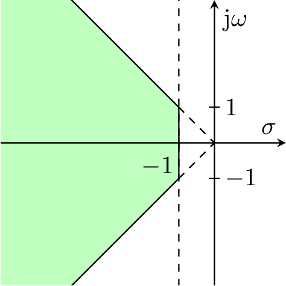It can be defined by
polearea = [ control.design.gamma.area.Line(1, 0),... control.design.gamma.area.Imag(1, 1) ];
For this example the solution can be determined analytically:
( is negative, which means that it is actually positive feedback.
This is correct, as with this feedback structure the only possibility to dampen the system is to partly "compensate" the spring .)
weight = 1; R0 = 1; Rfixed = []; optimizer = optimization.solver.Optimizer.IPOPT; gammaopts = control.design.gamma.GammasynOptions(); [R_opt, J_opt, info] = control.design.gamma.gammasyn(... sys,... polearea, weight,... Rfixed, R0, optimizer, gammaopts... );
With the code above, all solutions for within the interval are "equally good" solution of the feasibility problem.
The exact value found depends on the initial value and the optimizer used.
(You could change the start value to to observe a difference.)
This means there exists a certain degree of freedom which can be used for other purposes.
The following code finds the controller among the feasible ones with the smallest norm of the feedback matrix.
In this case, it is just the with the smallest absolute value, i.e. the unique solution now is .
weight = 1; R0 = 1; Rfixed = []; optimizer = optimization.solver.Optimizer.IPOPT; gammaopts = control.design.gamma.GammasynOptions(... 'type', GammaJType.NORMGAIN,... 'objective.normgain.R', (1)... ); [R_opt, J_opt, info] = control.design.gamma.gammasyn(... sys,... polearea, weight,... Rfixed, R0, optimizer, gammaopts... );
Now it is assumed that the mass and the damping coefficient are not exactly known but only intervals are given.
To apply the multiple model approach in a first step the "corner" models as well as the rated model are build and stored in one vector.
m = [0.9, 1.1]; d = [8, 12]; c = 1000; sys = [ omo_sys(m(1), d(1), c),... omo_sys(m(2), d(1), c),... omo_sys(m(1), d(2), c),... omo_sys(m(2), d(2), c),... omo_sys(mean(m), mean(d), c) ];
The target pole region is the same as in the example above.
polearea = [ control.design.gamma.area.Line(1, 0),... control.design.gamma.area.Imag(1, 1) ];
Also the call to gammasyn is the same as above, the only difference is that sys now contains five instead of one system.
weight = 1; R0 = 1; Rfixed = []; optimizer = optimization.solver.Optimizer.IPOPT; gammaopts = control.design.gamma.GammasynOptions(); [R_opt, J_opt, info] = control.design.gamma.gammasyn(... sys,... polearea, weight,... Rfixed, R0, optimizer, gammaopts... );
This task proves to be feasible, i.e. there exists a controller gain for which the poles of all five closed loops lie within the specified region.
The following image shows the poles of all five closed loop systems
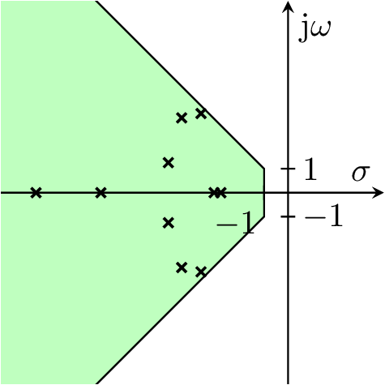This multiple model approach is heuristic and makes no guarantees about the -stability of the other systems described by the given parameter ranges.
It is advisable to check the properties for a larger subset of the admissible systems.
This is made in the following image, where the poles of 100 additional closed loop systems are shown in gray.
This framework considers static, possibly structured output feedback only.
As will be discussed later, this is actually not a restriction, as any dynamic feedback can be cast into this form.
In the simplest form for this framework a system is given by the three matrices , and of the state space representation
and the control loop is to be closed with the controller
where is the reference value.
This leads to a closed loop
whose poles are the solutions of the eigenvalue problem
As a small notational convenience in some cases, the model can be described as
with the invertible mass matrix .
The feedback has the same form as above which leads to the associated eigenvalue problem
to determine the eigenvalues or poles of the closed loop system.
To allow modeling true differential feedback, the model can be extended to
for which the controller has the structure
As the model used here is an augmented system, as discussed below, the output doesn't generally reflect the actual process variables.
Therefore, the process variables for which sensible reference values (or set points) exist are described by an additional output equation:
Combining all extensions, the most general system description used by this toolbox is
where must be an invertible matrix and the controller is given by
The eigenvalues or poles of the closed loop are the solution of the generalized eigenvalue problem
The structure is depicted here:
The discrete time model is defined analogously to the continuous time case as
where must be an invertible matrix and the controller is given by
The discrete time analogous "derivative" output is only defined for accordance with the continuous time system matrices and serves no engineering purpose because it results in a non causal system.
The structure is depicted here:
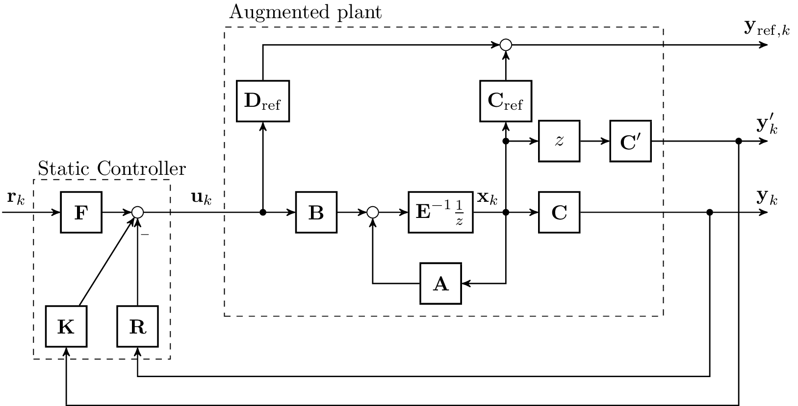The system given by the structure described above is an augmented system in the sense that it may contain parts of the controller.
The approach applied in this toolbox relies on static structured output feedback.
However, this is a very general approach, as all the controller dynamics can be added to the system, resulting in the "augmented system".
If for example the system
is to be controlled by a PI-controller
with , being the reference value, which can be written in the state space representation
the resulting augmented system is
to which the static output feedback
is applied.
This is a structured feedback, as the second row of the feedback matrix doesn't contain any free parameter but values which must not be altered by the optimizer.
More generally, if the given system is controlled with a general dynamic controller
(where to may be structured) the augmented system is
which is closed by
where (and ) are generally structured corresponding to the structure of to (and and ).
As such structure is mandatory to achieve given controller structures as for example PI or PID controllers, this toolbox provides the possibility to define such structures.
The basic aim of this control design procedure is to determine and such that all poles , , of the closed loop system lie within a certain region of the complex plane.
This toolbox distinguishes between two regions:
For a compact notation, the real part of a complex value is written as and the imaginary part as , i.e. for example
A region is defined by one or the intersection of more areas.
Here, "area" refers to the "left side" of a curve in the complex plane.
Depending on the optimizer, a function should be differentiable twice after each argument.
A region is defined as a set of areas, .
The condition that all poles lie within this area translates to
For the robust case, where models are to be considered, the condition is
As there are two pole regions, and , there are also two sets of functions : and .
The aim is to determine the matrices of the controller
Generally it is structured feedback, that is, the matrices cannot be chosen freely but certain entries are fixed and there may be additional conditions to be respected.
Mathematically fixed entries and linear dependencies between different entries can be expressed in the form
which allows dependecies of entries of the same matrix only or the more general form
where is the vectorization operator.
Mathematically the latter form comprises the precedent three equations, but this framework allows the specification in either form or both forms simultanously.
The notation used here is versatile.
Of course equality conditions of the form actually simply reduce the effective number of optimization variables.
The same is valid for linear equation constraints between two and more optimization variables.
This is used by the toolbox when it constructs the problem, but for the sake of readability it is not denoted explicitly here.
The possibility to formulate linear equality conditions is necessary for the design of a structured controller.
Not necessary but possible are linear inequality conditions (aside from the ones resulting from the pole region constraints which are introduced below), which can be specified in the form
and
To provide more flexibility, this toolbox allows also for nonlinear equality and inequality conditions,
Instead of referring to these seven equations and seven inequalities in the feasibility and optimization problems that follow, it is used the shorter notation
For example
These are translated into constraints or into an objective function, depending on the type of region (hard or soft) and the capabilities of the optimizer.
If the optimizer supports inequality constraints directly,
If no additional objective function is given, i.e. , this is a feasibility problem.
The weights are not necessary from a theoretical - and mostly practical - point of view.
Generally they should be set to 1.
If the optimizer doesn't support inequality constraints (or for the soft pole region ) the inequality constraints have to be transformed into an objective function using loss functions.
In most cases the resulting objective function has the form
i.e. for each combination of model, pole and area the value of is assessed by some loss function and the sum is used as objective function.
The following table lists the most common choices for :
| loss function | |
|---|---|
| Quadratic loss function | |
| loss function | |
| Exponential loss function | |
| Logarithmic loss function |
An alternative objective function is based on the Kreisselmeier-Steinhauser function,
which is an (rough) approximation of .
The resulting optimization problem is
If a constrained optimizer is used, a second pole region can be defined.
This soft region is treated in the same way as unconstrained optimizers treat the hard pole region, i.e.
Additional objective functions can be selected.
In order to get a small control action, the controller matrices can be minimized by the choice of GammaJType.NORMGAIN as objective type with the objective function
where the matrices of appropriate dimension are chosen for weighting.
For greater robustness of the closed loop, the condition number of the eigenvector matrix can be minimized by the choice of GammaJType.EIGENVALUECONDITION with the objective function
Another possibility for achieving greater robustness against time varying unstructured uncertainty in the system matrix of the closed loop, is the minimization of the norm of the Lyapunov matrix of the closed loop system, which can be achieved by the choice of GammaJType.LYAPUNOV.
The objective function in this case has the form
where the matrices in the Lyapunov equation can be chosen independently for every multiple model.
The matrices and which correspond to the unstable and stable part of the system respectively stem from a Schur decomposition of the closed loop system matrix where the unstable system matrix is replaced by in the continuous time case and in the discrete time case.
For constrained optimizers the "full" optimization problem is
For unconstrained optimizers the "full" optimization problem is
In this case only "simple" linear equality conditions can be imposed for the entries of , and which can be incorporated directly by reducing the number of optimization variables.
[R_opt, J_opt, info] = control.design.gamma.gammasyn(... sys,... polearea, weight,... Rfixed, R0, optimizer, gammaopts,... [Rbounds [, Rnonlin]]... );
R_opt: Found solution, the format depends on relevant
sys defines neither nor and , then R_opt is simply a numerical matrix corresponding to sys defines the matrix but not and , then R_opt is a cell array with two numerical entries corresponding to the solution sys defines and , but not , then R_opt is a cell array with two numerical entries corresponding to the solution sys defines all matrixes, then R_opt is a cell array with three numerical entries corresponding to the solution J_opt: value of the objective function at R_optinfo: structure with additional information about the resultPLEASE NOTE: The current version of the toolbox "ignores" the prefilter .
Current work aims to extend the toolbox for the design of coupling and decoupling controllers.
In theses cases the manipulation of is necessary.
Therefore, it is included in the API.
But in the current release version, will always be returned as the initial value or a zero matrix.
sysThe argument sys describes one or more systems.
A system is described by a struct whose fields correspond to the matrices of a state space realization.
If more than one system is given, sys is a vector of structs.
These systems are always the augmented systems which may include (parts of) the controller.
In the simplest form a system is given by the three matrices , and of the state space representation
Optionally, this toolbox allows to specify a mass matrix and to design ideal differential feedback as well as it can design a prefilter.
The "full" system form is given by
where must be an invertible matrix.
| Fields | Remark |
|---|---|
| A, B, C | Minimum form |
| C_dot | Optional |
| E | Optional |
| C_ref, D_ref | Optional |
PLEASE NOTE: A field D may be given (and is also returned by functions of this toolbox), but it must be a zero matrix of compatible size! (Future versions may allow systems with feed through but in the current version a non-zero D results in undefined behavior.)
If the additional flexibility of differential feedback or reference outputs is not needed, it is also possible to supply system descriptions that are included in Matlab's Control System toolbox as ss, tf, uss or dss.
RfixedThe controller structure is given by the mandatory argument Rfixed as well as the optional arguments Rbounds and Rnonlin.
In the following, the structure of one of the matrices , and are explained.
(It is the same for each one.)
They are combined by forming a cell array, i.e. if all three matrices are used:
Rfixed = {Ra_fixed, Ka_fixed, Fa_fixed, RKFa_fixed}
If no dependencies between different gain matrices are needed, this can be reduced to
Rfixed = {Ra_fixed, Ka_fixed, Fa_fixed}
If only and is used,
Rfixed = {Ra_fixed, Ka_fixed}
and if only is used,
Rfixed = {Ra_fixed}
Fixed values
Ra_fixed = {Rfix, Rval}
Rfix is a logical matrix with true-entries marking the fixed entries.
Rval is a numerical matrix where the fixed values are given.
The non-fixed values are marked as NaN in this matrix.
(This is redundant, as Rfix = ~isnan(Rval) but is needed to distinguish the format.)
For example, if with the parameters and being free, the definition of the structure would be
{[false, false; true, true], [NaN, NaN; 1, 0]}
Linear dependencies between controller parameters
Ra_fixed = {Zlhs, Zrhs}
Linear dependencies are given by linear equations of the form
where means element-wise multiplication (Hadamard product).
If there is more than one equation , the matrices are stacked along the third dimension in Zlhs.
I.e, if Nz linear dependencies are specified, the dimensions of Zlhs and zrhs are size(Zlhs): [size(R, 1), size(R, 2), Nz] (for the combined constraints size(Zlhs): [size(R, 1), size(R, 2) + size(K, 2) + size(F, 2), Nz]) and size(Zrhs): [Nz, 1], resp.
For example, if with being free but subject to the constraints and , the definition of the structure would be
{cat(3,... [1, -1, 0; 0, 0, 0],... % lhs of r_1 - r_2 = 0 [1, 0, -1; 0, 0, 0],... % lhs of r_1 - r_3 = 0 [0, 0, 0; 1, -1, 0],... % lhs of r_4 - r_5 = 0 [0, 0, 0; 0, 0, 1]... % lhs of r_6 = 1 ),... [ 0; % rhs of r_1 - r_2 = 0 0; % rhs of r_1 - r_3 = 0 0; % rhs of r_4 - r_5 = 0 1 % rhs of r_6 = 1 ] }
K and F can be specified in the same way in Ka_fixed and Fa_fixed. For dependecies involving all matrices RKFa_fixed can be used, specifying {Zlhs, Zrhs} corresponding toSymbolic dependencies between controller parameters
If the Symbolic Math Toolbox is available, it is also possible, to formulate the controller coefficient constraints as symbolic expressions.
This can be achieved by specifying the symbolic gain matrix in the first element of a cell array and the symbolic equation system in the second element of the cell array for every gain matrix like in
R = sym('R', [2, 2]); K_I = sym('K_I'); K_P = sym('K_P'); R(1, 1) = K_P; R(1, 2) = K_I; Ka_fixed = {R, [ K_I == K_P; R(2, 1) == 1; R(2, 2) == 0 ]};
for the proportional part of a PID controller where integral and proportional action should have the same coefficient value.
As it may be cumbersome to construct the augmented system as well as to specify the structure of the controller matrices manually for the desired controller structure, this toolbox provides helper functions for common controller structures.
Alternatively the capabilities of the parameterized and uncertain system objects of the Control System Toolbox and the Robust Control Toolbox can be used.
| Class | Parameters | Description |
|---|---|---|
| ConstantOutputFeedback | ||
| DynamicOutputFeedback | nD | nD: order of the dynamic controller |
| ObserverDirectOutputFeedback | ||
| ObserverOutputFeedback | ||
| ObserverStateFeedback | ||
| PDOutputFeedback | ||
| PIDOutputFeedback | ||
| StateFeedback |
sys = omo_sys(1, 10, 1000); controller = control.design.outputfeedback.PIDOutputFeedback(); % construct augmented system sys_augmented = controller.amend(sys); % get structure description [Ra_fixed, Ka_fixed] = controller.gainpattern(sys); Rfixed = {Ra_fixed, Ka_fixed};
This works as well if sys contains several systems:
m = [0.9, 1.1]; d = [8, 12]; c = 1000; sys = [ omo_sys(m(1), d(1), c),... omo_sys(m(2), d(1), c),... omo_sys(m(1), d(2), c),... omo_sys(m(2), d(2), c),... omo_sys(mean(m), mean(d), c) ]; controller = control.design.outputfeedback.PIDOutputFeedback(); sys_augmented = controller.amend(sys); [Ra_fixed, Ka_fixed] = controller.gainpattern(sys); Rfixed = {Ra_fixed, Ka_fixed};
Instead of supplying the system descripton as a structure with the neccessary fields, it is also possible to use a tf or ss object (or array in case of multiple models) as system.
sys = omo_sys(1, 10, 1000); sys = ss(sys.A, sys.B, sys.C); controller = control.design.outputfeedback.PIDOutputFeedback(); % construct augmented system sys_augmented = controller.amend(sys); % get structure description [Ra_fixed, Ka_fixed] = controller.gainpattern(sys); Rfixed = {Ra_fixed, Ka_fixed};
R0An initial value for the feedback matrix must be given.
It must have the same dimension as , i.e. size(R0) : [size(sys.B, 1), size(sys.C, 2)].
If contains fixed values, the corresponding entries of R0 are ignored.
An inital value for the differential feedback matrix may be given.
In this case, R0 is a cell array containing two matrices,
R0 = {Ra0, Ka0}
If the structure employs differential feedback but no initial value for is given, it is set to .
Supplying an initial value for the prefilter gain $F$ is possbile with three matrices
R0 = {Ra0, Ka0, Fa0}
It is possible to provide more than one initial value.
In this case the optimization problem is solved for each (set of) initial value(s) and the best solution is returned.
To provide multiple initial values, instead a two-dimensional matrix R0, a cell array of two two-dimensional matrices {Ra0, Ka0} or a cell array of three two-dimensional matrices {Ra0, Ka0, Fa0} three-dimensional values have to be provided.
If the user supplied initial value for optimization is to be changed by a further processing step to make it more suitable for the pole region assignment problem by taking the multiple models into account, this is possible by the use of the InitialValue class.
This class is a container for different InitialValueElement objects that may implement this processing, e.g. using the oplace toolbox for design of structurally constrained output feedback controllers with pole assignment developed at the institute of automatic control at the TU Darmstadt.
Currently this task is left to the user and there are only two simple InitialValueElement classes defined, GammasynInitialValueElement which is basically only a wrapper for numeric initial values described above and RandomInitialValue which returns random initial values of appropriate size.
An initial value consisting of a random value and a numeric value can be constructed by
R0 = control.design.gamma.InitialValue(... control.design.gamma.RandomInitialValue(2),... control.design.gamma.GammasynInitialValueElement(Ra0)... )
which creates two random initial values and the numeric initial value Ra0.
A region is defined by one or the intersection of more areas.
Here, "area" means a function which maps any point of the complex plane, , to a real number, .
It is zero on the border of the area, has negative values on the side at which poles must or should lie and positive values on the other side.
It should be differentiable twice.
These are translated into constraints or into an objective function, depending on the type of region (hard or soft) and the capabilities of the optimizer.
If it is translated to an objective function, the area functions are applied to a loss function defined with GammaJType.
To allow for an efficient optimization, an area should not only provide its value when called for a certain point of the complex plane, but also returns its first (and second) derivatives.
For the common areas these functions are predefined, such that there should be seldom the need to define custom area functions.
Generally, a region (hard or soft) is defined by a row vector of control.design.gamma.area-Objects, for example
region = [ control.design.gamma.area.Line(1, 0),... control.design.gamma.area.Imag(1, 1) ]
If a robust design is performed, i.e. there is more than one model defined, and different regions should be given for different models, then the regions are defined by a matrix, where every row describes the region for the corresponding model in the sys-vector.
(If the same region is used for all models, only one has to be defined.)
For three systems the regions may be defined for example by
region = [ control.design.gamma.area.Line(1, 0), control.design.gamma.area.Imag(1, 1); control.design.gamma.area.Line(0.7, 0), control.design.gamma.area.Imag(1, 1); control.design.gamma.area.Line(0.5, 0), control.design.gamma.area.None() ]
If the number of areas differs for the different regions, the None-area can be used to fill the rows of matrices.
If both a hard and a soft region are refined, polearea is a cell array with two elements, each containing a vector of areas:
polearea = {hardregion, softregion}
If only a hard region is defined, the soft region can be set to an empty matrix
polearea = {hardregion, []}
or equivalently, polearea can be set directly as the hard region vector or matrix
polearea = hardregion
NOTE: If an unconstrained optimizer is used, only the hard region is used.
I.e. if a soft region is defined, it is simply ignored.
If a constrained optimizer is used, and the user wants to specify a soft region only, that could be achieved with
polearea = {control.design.gamma.area.None(), softregion}
explicitly or by specifying [] implicitly.
However, it is advisable to specify at least the "minimal" hard region, i.e. the left half plane for continuous time systems or the unit circle for discrete time systems.
| Area | Parameters | Description | |
|---|---|---|---|
| Circle Circlesquare |
R | R: Radius | 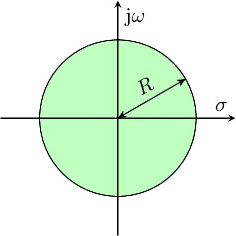 |
| Ellipse Ellipsesquare |
a, b | a: semi axis along real axis b: semi axis along imaginary axis |
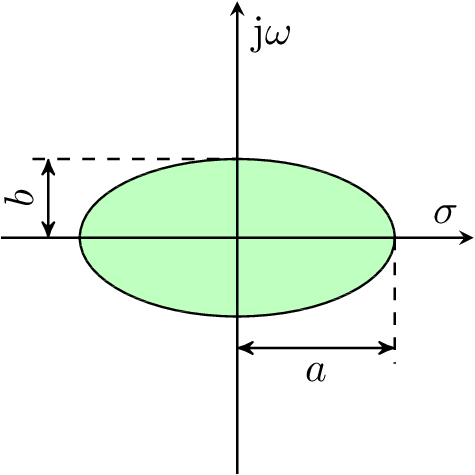 |
| Hyperbola Hyperbolasquare |
a, b | a: semi axis along real axis b: semi axis along imaginary axis |
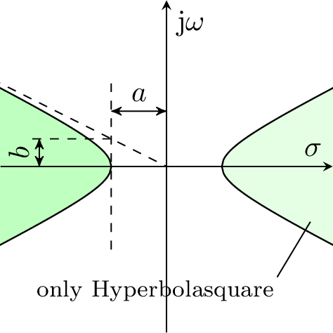 |
| Imag | a, b | Vertical line For left part: a: 1, b: neg. position of line on real axis For right part: a: -1, b: position of line on real axis |
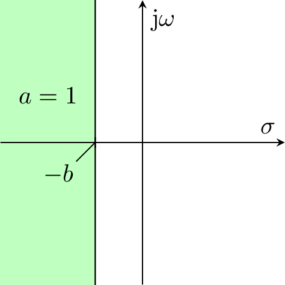 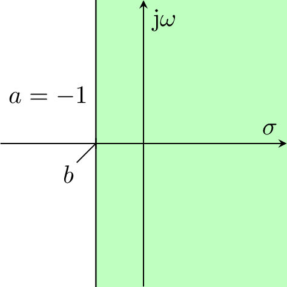 |
| Line | a, b | a: slope b: intercept The "left" area is always the part above the line! |
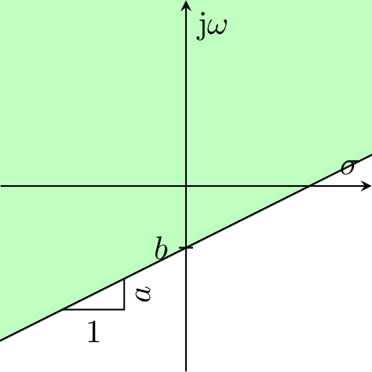 |
| LogSpiral | r, k | r: start point on real axis k: polar slope |
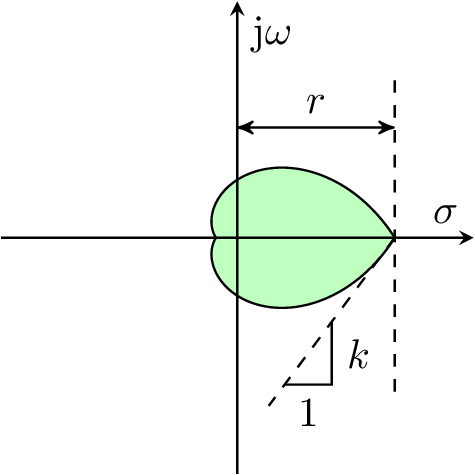 |
| None | |||
| PolyEllipse PolyEllipsesquare |
All areas (except None, where it is ignored) accept an additional optional parameter shift.
This parameter is a complex number which allows to shift the origin of the "base" coordinate system defining the area.
I.e. for circles, shift defines the center point.
If shift is not specified, it is set to zero.
Some of the areas are more naturally defined by a squared expression.
Taking the square root results in a function that may not be differentiable, if the argument of the root can attain zero.
Therefore, it may be a good choice to work with the square form directly.
However, depending on the usage this may lead to other problems if squared and non-squared forms are mixed, as in the first case the "distance" is measured squared and in the latter it is measured "normally".
Therefore, the non-squared versions are provided as well.
And an additional definition has to be added, if the shape doesn't distinguish between the left and right half plane.
z = areafun(re, im)
[z, dzdre, dzdim] = areafun(re, im)
[f, dfdre, dfdim, d2fdredre, d2fdimdre, d2fdredim, d2fdimdim] = areafun(re, im)
In this simple example, the exterior of a circle with radius is chosen as desired area.
In square form, the area is defined by
which gives the derivatives
Accordingly, the function could be implemented as
function [z, dzdre, dzdim] = mindistance_area(re, im, R) z = R^2 - re^2 - im^2; dzdre = -2 * re; dzdim = -2 * im; end
and used as
polearea = @(re, im) mindistance_area(re, im, 5)
Multiple regions can be defined by simply letting the function return row vectors of function and gradient values instead of scalars.
weight: Weighting of areasAs described above, each area and model is associated with a weight which appears within the inequality constraints or the derived loss functions.
weight is structured like polearea.
If both a hard and a soft region is defined, weight is a cell array with two numeric elements (scalar, vector or matrix)
weight = {hardweight, softweight}
If only a hard region is given, weight might be set directly to corresponding numeric element
weight = hardweight
hardweight and softweight can be defined in one of the following forms:
Remarks:
allownegativeweight must be set to true.gammaopts: Objective function and associated optionsThe options, which are described below, can be set using the function
gammaopts = control.design.gamma.GammasynOptions(parameter, value, ...)
The parameter name may contain dots, for example 'objective.normgain.K.
| Option | Remark |
|---|---|
type |
objective functions, element of GammaJType |
objective.normgain.{R, K, F} |
Weights for minimization of controller norm |
objective.normgain.{R_shift, K_shift, F_shift} |
Shift for minimization of controller norm |
objective.kreisselmeier.{rho, max} |
Parameters for Kreisselmeier objective function |
objective.lyapunov.Q |
right hand side matrix for Lyapunov equation |
weight |
weight for the used objective functions |
allowvarorder |
true, {false}: indicator if systems with different numbers of states are allowed |
allownegativeweight |
true, {false}: indicator if negative area weights are allowed |
usecompiled |
true, {false}: indicator if generated code should be used |
numthreads |
number of parallel threads to use |
eigenvaluederivative |
method for calculation of eigenvalue derivatives to use |
eigenvaluefilter |
filter for eigenvalues to use |
strategy |
strategy for solution to use |
errorhandler |
type of error handler to use |
errorhandler_function |
error handler function to use in case of GammaErrorHandler.USER |
system.usereferences |
indicator if output matrix C should be used as for matlab system descriptions |
system.usemeasurements_xdot |
indicator if output matrix C_dot should be used as for matlab system descriptions |
system.samples |
structure with fields equal to the names of uncertain blocks in the uss system description to indicate the number of multiple models to create from the corresponding uncertain parameter |
system.Blocks |
structure with fields equal to the names of uncertain blocks in the uss system description to indicate the number of multiple models to create from the corresponding uncertain parameter |
typeWith this option the type of loss function used for the soft region (constrained optimizers) or the hard region (unconstrained optimizers) is selected.
Also, additional objective function terms can be selected.
type is a scalar or a vector of elements of the enumeration GammaJType.
The elements are listed in the following table and some examples are given below.
| GammaJType | Remark | Loss function |
|---|---|---|
| ZERO | no objective function (pure feasibility problem) | |
| MAX | loss function | |
| SQUAREPENALTY | Quadratic loss function | |
| EXP | Exponential loss function | |
| LINEAR | (*) linear weighting of pole areas | |
| SQUARE | (*) signed quadratic weighting of pole areas | |
| CUBIC | (*) cubic weighting of pole areas | |
| LOG | (*) Logarithmic loss function | |
| KREISSELMEIER | vector performance index weighting according to Kreisselmeier | |
| EIGENVALUECONDITION | (**) eigenvector matrix condition objective function | |
| NORMGAIN | (**) norm of gain matrices | |
| LYAPUNOV | (**) norm of Lyapunov matrix of closed loop |
(*) These loss functions are unbounded below.
This may lead to unexpected results if the closed loop possesses conjugate complex poles.
They are provided mainly for experimental and academic reasons.
(**) These loss functions don't assess the poles at all but are motivated by the aim to get a robust or economic controller.
For example, if type is set to
GammaJType.SQUAREPENALTY
the quadratic loss function is used and none of the additional objective functions and is added.
If type is set to
[GammaJType.SQUAREPENALTY; GammaJType.NORMGAIN]
the quadratic loss function is used and the controller norm is added.
To weight these two terms, the option weightcan be set appropriately.
If type is set to
[GammaJType.ZERO; GammaJType.NORMGAIN]
only the norm of the controller is used in the objective function.
This can be a sensible choice when constrained optimizers are used, as the hard region is still respected.
When an unconstrained optimizer is used, this is not a sensible choice, as the pole region is ignored completely and therefore the optimum is that all controller matrices are zero.
The function accepts multiple types of loss functions, but there should be no use for.
However, it is important to notice that
[GammaJType.SQUAREPENALTY; GammaJType.SQUAREPENALTY]
does not mean that the hard and the soft region are both translated to an objective function term using the quadratic loss function but the following!
If NORMGAIN is used as objective function, the weighting matrices , and have to be specified using the following parameters of objoptions:
| Parameter | Description |
|---|---|
objective.normgain.R |
|
objective.normgain.K |
(only necessary if is used in the structure) |
objective.normgain.F |
(only necessary if is used in the structure) |
objective.normgain.R_shift |
|
objective.normgain.K_shift |
|
objective.normgain.F_shift |
The weighting matrices have to be of the same dimension as the corresponding controller matrix.
It is not sufficient to use a scalar value, even if the weight should be the same for all entries.
The shifting matrices are optional.
| Parameter | Description |
|---|---|
objective.kreisselmeier.rho |
|
objective.kreisselmeier.max |
If LYAPUNOV is used as objective function, the matrices have to be specified using the following parameters of objoptions:
| Parameter | Description |
|---|---|
objective.lyapunov.Q |
If the same matrix is to be used for all multiple model, it is sufficient to supply a single matrix.
In case a specific matrix for every multiple model should be used, the matrices have to be concatenated in the third dimension.
When nothing is specified, the identity matrix is used.
If the discrete time Lyapunov equation is to be solved in case of discrete time systems, it is vital to add a field T with the sampling time to the system description in order to signal this.
When the option allowvarorder is set to true and therefore systems with different state dimension are allowed, the remaining elements of must be filled with NaN to match the dimension of the largest system in use.
If more than one objective function term is selected by type, their weighting can be specified by weight which is a numeric vector of the same dimension as type with the corresponding non-negative weights.
If for example the objective function
is to be used, the following options are to be set:
'type' : [GammaJType.SQUAREPENALTY; GammaJType.NORMGAIN] 'weight' : [1; 1e-5]
| GammaEigenvalueDerivativeType | Remark |
|---|---|
| DEFAULT | calculation of eigenvalue derivatives by Rayleigh coefficient |
| VANDERAA | calculation of eigenvalue and eigenvector derivatives with method of van der Aa |
| RUDISILLCHU | calculation of eigenvalue and eigenvector derivatives with Rayleigh coefficient and pseudo inverse |
| GammaEigenvalueFilterType | Remark |
|---|---|
| NONE | no filtering of eigenvalues |
| NEGATIVEIMAG | remove eigenvalues with negative imaginary part from calculation by taking negative imaginary part instead |
| POSITIVEIMAG | remove eigenvalues with positive imaginary part from calculation by taking negative imaginary part instead |
| GammaSolutionStrategy | Remark |
|---|---|
| SINGLESHOT | solve pole region assignment problem "as is" |
| FEASIBILITYITERATION | solve a feasibility problem before solving the actual problem and use the solution of the feasibility problem as initial value |
| GammaErrorHandler | Remark |
|---|---|
| WARNING | convert errors to warnings |
| ERROR | leave errors as is |
| USER | use user defined error handler |
If USER is chosen, a handler to an error handler function has to be provided in the option errorhandler_function.
The optimizers marked with (*) are included in this repository.
| Optimizer | Constr. | Obj. | Origin | Licence | Remark |
|---|---|---|---|---|---|
| FMINCON | * | Matlab, Optimization Toolbox | prop. | ||
| FMINCONGLOBAL | * | Matlab, Global Optimization Toolbox | prop. | ||
| IPOPT | * | https://github.com/coin-or/Ipopt | Eclipse Public License 1.0 | ||
| FMINIMAX | * | * | Matlab, Optimization Toolbox | prop. | |
| FMINUNC | Matlab, Optimization Toolbox | prop. | |||
| FMINUNCGLOBAL | Matlab, Global Optimization Toolbox | prop. | |||
| FMINSEARCH | Matlab | prop. | |||
| GA | * | * | Matlab, Global Optimization Toolbox | prop. | |
| KSOPT | * | * | https://github.com/madebr/pyOpt | LGPL | |
| NLOPTUNC | https://nlopt.readthedocs.io/en/latest/ | MIT Lizenz | |||
| NLOPTCON | * | https://nlopt.readthedocs.io/en/latest/ | MIT Lizenz | ||
| NLOPTUNCGLOBAL | https://nlopt.readthedocs.io/en/latest/ | MIT Lizenz | |||
| NLOPTCONGLOBAL | * | https://nlopt.readthedocs.io/en/latest/ | MIT Lizenz | ||
| PARTICLESWARM | Matlab, Global Optimization Toolbox | prop. | |||
| PATTERNSEARCH | * | Matlab, Global Optimization Toolbox | prop. | ||
| SIMULANNEAL | Matlab, Global Optimization Toolbox | prop. | |||
| PPPBOX | * | ? | |||
| SCBFGS | https://coral.ise.lehigh.edu/frankecurtis/software/ | ? | |||
| SLPGS | https://coral.ise.lehigh.edu/frankecurtis/software/ | ? | |||
| SNOPT | * | http://ccom.ucsd.edu/~optimizers/solvers/snopt/ | prop. | ||
| SQPGS | https://coral.ise.lehigh.edu/frankecurtis/software/ | ? |
Optimizers which are marked with an asterisk in the column "Constr." support constraint optimization directly.
For these optimizers, the hard pole region is by default expressed as a constraint.
Optimizers which are marked with an asterisk in the column "Obj." support multi objective optimization directly.
For the other optimizers the hard pole region is transformed into a soft pole region by an outer penalty function specified with GammaJType.
These optimiziers are only applicable to pole region assignment problems with one hard or one soft region and no other objective terms (e.g. norm of controller).
To specify one of the available optimizers with their default options, the argument optimizer can be set to
optimizer = optimization.solver.Optimizer.IPOPT;
or any other optimizer than IPOPT.
To change the options of the optimizer, the following syntax can be used.
This is an example for IPOPT, other optimizers may provide different options:
options = optimization.options.OptionFactory.instance.options(... optimization.solver.Optimizer.IPOPT, ... 'ProblemType', optimization.options.ProblemType.CONSTRAINED,... 'Retries', 1,... 'Algorithm', solver.defaultalgorithm,... 'FunctionTolerance', 1E-8,... 'StepTolerance', 1E-10,... 'ConstraintTolerance', 1E-7,... 'MaxFunctionEvaluations', 25E3,... 'MaxIterations', 25E3,... 'MaxSQPIter', 25E3,... 'SpecifyObjectiveGradient', true,... 'SpecifyObjectiveHessian', false,... 'SpecifyConstraintGradient', true,... 'SpecifyConstraintHessian', false,... 'CheckGradients', false,... 'FunValCheck', false,... 'FiniteDifferenceType', 'forward',... 'Diagnostics', false,... 'Display', 'iter-detailed'... );
The most important options are
| Option | Description |
|---|---|
ProblemType |
type of problem formulation (constrained, unconstrained, multiobjective) |
Algorithm |
algorithm to use for optimization (if the solver supports different algorithms) |
SpecifyObjectiveGradient |
indicator if gradient information for the objective function should be used |
SpecifyObjectiveHessian |
indicator if hessian information for the objective function should be used |
SpecifyConstraintGradient |
indicator if gradient information for the constraint functions should be used |
SpecifyConstraintHessian |
indicator if hessian information for the constraint functions should be used |
Display |
level of verbosity of the displayed information |
In general the class Options has most the fields that the optimoptions class of the Optimization Toolbox of Matlab R2016B and newer has with the same meaning and additionally the fields ProblemType and Retries.
Which of these settings are taken into account by a certain solver depends on the solvers interface.
Generally speaking, the solvers from the Opimization Toolbox support the same settings as can be set by optimoptions while the external solvers with MEX interfaces only support a limited subset of all options.
Rbounds: Bounds (linear inequality constraints)Bounds can be imposed for single entries of the controller matrices as well as bounds on linear combinations of parameters of the same matrix , or (i.e. linear inequality constraints) can be imposed.
They are defined similarly to the equality constraints in Rfixed.
Combined constraints on all gain coefficients can be formed as a cell array containing matrices for constraints of the single matrices and another one for the combined constraints as follows:
Rbounds = {Ra_bounds, Ka_bounds, Fa_bounds, RKFa_bounds}
The definitions of the bounds for the single matrices (which are explained below) are combined by forming a cell array, i.e. if all three matrices are used:
Rbounds = {Ra_bounds, Ka_bounds, Fa_bounds}
If only and is used,
Rbounds = {Ra_bounds, Ka_bounds}
and if only is used,
Rbounds = {Ra_bounds}
The bounds of ( and analogously) are defined by
Ka_bounds = {Zlhs, Zrhs}
where Zlhs and Zrhs correspond to and , resp., in
where means element-wise multiplication (Hadamard product).
If there is more than one inequality , the matrices are stacked along the third dimension in Zlhs.
I.e, if Nz linear inequalities are specified, the dimensions of Zlhs and zrhs are size(Zlhs): [size(R, 1), size(R, 2), Nz] (size(Zlhs): [size(R, 1), size(R, 2) + size(K, 2) + size(F, 2), Nz] for combined constraints) and size(Zrhs): [Nz, 1], resp.
For an example refer to the section about the parameter Rfixed.
Rnonlin: Nonlinear inequality and equality constraintsIt is possible to impose nonlinear equality and inequality constraints on the parameters of the matrices , or .
In contrast to the linear constraints, a single constraint can only be imposed on one or more parameter of the same matrix, i.e.
These functions are provided by a single function Rnonlin_wrapper which is to be passed as the argument Rnonlin and has the signature
[cineq_R, ceq_R, cineq_K, ceq_K, cineq_F, ceq_F] = Rnonlin_wrapper(R, K, F)
or
[cineq_R, ceq_R, cineq_K, ceq_K, cineq_F, geq_F, gineq_R, geq_R, gineq_K, geq_K, gineq_F, geq_F] = Rnonlin_wrapper(R, K, F)
The second variation returns the gradients as well.
c... are vectors of possibly different length corresponding to the functions above.g... are returned, they are returned in three-dimensional matrices. For each entry in the corresponding c...vector g...contains a matrix with the derivations after each entry of the concerned controller matrix. These are stacked in the third dimension. I.e.size(gineq_R) : [size(R, 1), size(R, 2), length(cineq_R) ]
If the controller matrix is
and the constraints
are given (and ignoring that the first constraint can be expressed as two simpler linear constraints), the Rnonlin_wrapper would be
function [cineq_R, ceq_R, cineq_K, ceq_K, cineq_F, ceq_F] = Rnonlin_wrapper(R, K, F) ceq_R = []; cineq_K = []; ceq_K = []; cineq_F = []; ceq_F = []; cineq_R = [ R(1, 2)^2 - 9; R(1, 2) + R(2, 3)^2 - 4 ]; end
or
function [cineq_R, ceq_R, cineq_K, ceq_K, cineq_F, geq_F, gineq_R, geq_R, gineq_K, geq_K, gineq_F, geq_F] = Rnonlin_wrapper(R, K, F) ceq_R = []; cineq_K = []; ceq_K = []; cineq_F = []; ceq_F = []; geq_R = []; gineq_K = []; geq_K = []; gineq_F = []; geq_F = []; cineq_R = [ R(1, 2)^2 - 9; R(1, 2) + R(2, 3)^2 - 4 ]; gineq_R = cat(3,... [0, 2 * R(1, 2), 0; 0, 0, 0],... [0, 1, 0; 0, 0, 2 * R(2, 3)]... ); end
For comparing and examining different calculated solutions the SolutionSet class can be used.
It is instantiated like
controllerdata = control.design.gamma.SolutionSet(controller, system, polearea, weight, R_fixed, R_bounds, true); controllerdata.add_solution(R_opt, J_opt, information, R0, options, gammaopts); controllerdata.save();
after a call to gammasyn and expects the controller type used as OutputFeedback and the arguments passed to and returned by gammasyn.
It has the ability to plot the closed loop eigenvalues and pole regions with the plot method, plot step responses with the step method and solve the problem again with possibly different initial values or different optimizers with the rerun method.
gammasyn is prepared for the synthesis of coupling controllers and will be extended to handle decoupling controllers as well.
For archieving this a specialized wrapper function named gammasyn_couplingcontrol is used that converts the supplied system to the needed description for coupling controller design.
The task of a coupling controller is to ensure
asymptotically and indpendently from any reference inputs .
The system must be given, such that the lower rows of
and
contain the parameters of a given number of coupling conditions in the form
To achieve coupling, the transfer matrix of the closed-loop system
is designed, such that holds.
By writing
with the closed-loop eigenvalues and the right and left eigenvectors and , the non-linear output- and input-coupling conditions
as well as
are obtained.
Here, denotes the dimension of the output nulling space of the system .
In case of , this space is equivalent to the largest controlled invariant subspace within the kernel of .
The conditions found can directly be included in the synthesis process using the built-in non-linear constraint function. Alternatively, using geometric concepts, the coupling conditions can be transformed to linear equality constraints which reduce the set of feasible controllers and prefilters.
The coupling control design implemented in gammasyn is only available for the design of a complete state feedback, i.e. must be chosen as identity matrix.
The methodology for designing robust coupling controllers using pole region assignment, can immediately be transferred to systems in differential-algebraic form (DAE systems, descriptor systems).
Therefore, the systems handed over are transformed using a singular value decomposition of the descriptor matrix in order to obtain state space systems with feedthrough.
For these, a robust coupling control best possibly fulfilling the algebraic equations is calculated.
To perform the coupling control synthesis or robust DAE synthesis, gammasyn_couplingcontrol has to be used.
Furthermore, the objectiveoptions structure has to be extended by the field couplingcontrol which in turn is a structure containing the following fields
couplingstrategy: the coupling design method, an instance of GammaCouplingStrategy.
GammaCouplingStrategy.EXACT: Only allow and use geometric methods.GammaCouplingStrategy.APPROXIMATE: Use geometric method but also allow if is not solvable.GammaCouplingStrategy.NUMERIC_NONLINEAR_EQUALITY: directly use coupling conditions as non-linear equality constraints of the form ceq(x) = 0 with x denoting the vector of optimization variablesGammaCouplingStrategy.NUMERIC_NONLINEAR_INEQUALITY: directly use coupling conditions as non-linear inequality constraints of the form c(x) < tolerance_coupling and -c(x) < tolerance_coupling with x denoting the vector of optimization variablescouplingconditions: (uint32) the number of coupling conditions specified in tolerance_coupling: (double) the tolerance when using GammaCouplingStrategy.NUMERIC_NONLINEAR_INEQUALITYsolvesymbolic: (logical) only for EXACT and APPROXIMATE: use symbolic toolbox if available to increase precision of obtained equality constraints.round_equations_to_digits: (double, whole number) only for EXACT and APPROXIMATE: decimal places to which linear equality constraints are rounded in case of numerical precision difficulties. Use NaN if no rounding is desired.weight_coupling: (double, nonnegative) weighting factor for nonlinear coupling conditions to increase/decrease importance in comparison with pole region constraintsweight_prefilter: (double, nonnegative) weighting factor for prefilter regularity condition to increase/decrease importance in comparison with pole region constraintsgammasyn_couplingcontrol checks the descriptor matrix to choose between a regular coupling control design and DAE design.
m = [0.9, 1.1]; d = [8, 12]; c = 1000; sys = [ omo_sys(m(1), d(1), c),... omo_sys(m(2), d(1), c),... omo_sys(m(1), d(2), c),... omo_sys(m(2), d(2), c),... omo_sys(mean(m), mean(d), c)... ]; controller = control.design.outputfeedback.PIDOutputFeedback(); sys_augmented = controller.amend(sys); [Ra_fixed, Ka_fixed] = controller.gainpattern(sys); Rfixed = {Ra_fixed, Ka_fixed}; polearea = [ control.design.gamma.area.Line(1, 0),... control.design.gamma.area.Imag(1, 1) ]; weight = 1; R0 = ones(2, 2); gammaopts = control.design.gamma.GammasynOptions(); optimizer = optimization.solver.Optimizer.IPOPT; [R_opt, J_opt, info] = control.design.gamma.gammasyn(... sys_augmented,... polearea, weight,... Rfixed, R0, optimizer, gammaopts... );
If a more ambitious region is targeted, as the one with the darker shade in the following image, and only a P-controller is to be used, there is no feasible solution.
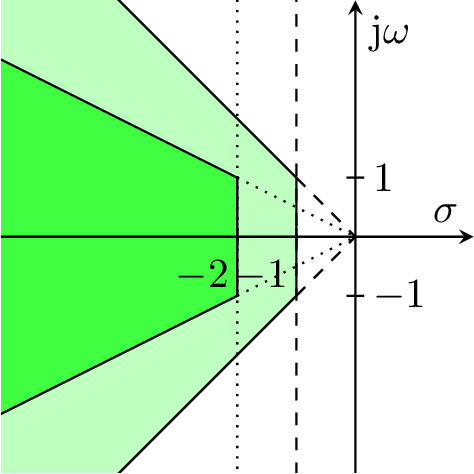Therefore, this region can be defined as a soft region.
m = [0.9, 1.1]; d = [8, 12]; c = 1000; sys = [ omo_sys(m(1), d(1), c),... omo_sys(m(2), d(1), c),... omo_sys(m(1), d(2), c),... omo_sys(m(2), d(2), c),... omo_sys(mean(m), mean(d), c)... ]; hardregion = [ control.design.gamma.area.Line(1, 0),... control.design.gamma.area.Imag(1, 1) ]; softregion = [ control.design.gamma.area.Line(0.5, 0),... control.design.gamma.area.Imag(1, 2) ]; polearea = {hardregion, softregion}; weight = {1, 1}; R0 = 1; Rfixed = []; gammaopts = control.design.gamma.GammasynOptions('type', GammaJType.SQUAREPENALTY); optimizer = optimization.solver.Optimizer.IPOPT; [R_opt, J_opt, info] = control.design.gamma.gammasyn(... sys,... polearea, weight,... Rfixed, R0, optimizer, gammaopts... );
This is a feasible problem.
The following image shows the poles of the closed loop systems.
(Not all poles are shown.
The poles which aren't shown lie to the left of the shown section and are less critical concerning the defined region.)
Clearly, some poles lie outside of the soft region, but all poles lie inside of the lighter shaded hard region.
With the weights the designer can influence the result further.
If for the problem at hand the velocity of the closed loop system is more important than its oscillation, the weight of the vertical border at -2 could be increased by
weight = {1, [1, 10]};
As a result, the poles respect the right border of the soft region more, while the distances to the upper and lower borders increase.
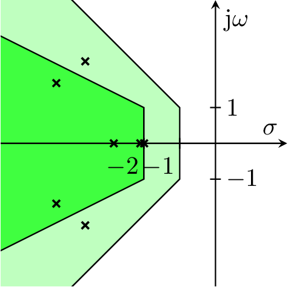In order to make the objective and constraint functions run a couple of orders faster it is possible to generate mex files for these functions with the help of the Matlab Coder toolbox.
The functions for compiling the functions are located in the compile package and the all function therein can be used to generate code and compile all the supported functions.
If it is intended to use the eigenvector derivative supplied by van der Aa's method it is necessary to use at least Matlab R2016B for code generation as this method relies on run time recursion which is not supported in earlier versions.
When the compiled functions should be used the option usecompiled in the gammaopts argument has to be set to true.
Since the generated code only support a limited set of Matlab's functionality, only builtin pole areas can be used and no custom defined areas as function handles.
Besides the structure description of the systems it is also possible to use the system description provided by the Control toolbox and Robust Control toolbox.
The system descriptions without tunable or uncertain parameters (i.e. tf, ss and dss) are internally converted to structure arrays of systems with the respective fields and whether the fields C_dot and C_ref should be filled by the output matrix of the system can be controlled by the options usemeasurements_xdot and usereferences in the gammaopts structure.
For systems with uncertain parameters (i.e. uss) it is possible to create multiple models from a single uncertain system.
This behavior can be controlled by the structures Blocks or systems which should contain the number of sampling points for the respective uncertain parameter.
For example an uncertain system with uncertain parameter u can be converted into 10 multiple models by setting
gammaopts.Blocks.u = 10;
Currently it is only possible to handle real uncertainty this way while complex uncertainty results in an error.
If tunable coefficients should be contained in the system description (i.e. genss) a specialized wrapper function named gammasyn_loopune has to be used which converts the internal system description to the output feedback formulation used by this toolbox and splits the system in an uncertain part and the controller matrix.
Bounds on the coefficients and fixed elements are respected as well in the conversion steps.
For the creation of multiple models from the uncertain part of the resulting system the same rules as above apply.
The signature of the function is
[system_cl, Jopt, information] = control.design.gamma.gammasyn_looptune(systems, areafun, weights, solveroptions, objectiveoptions)
and it expects the system to be of type genss while the rest of the arguments equals the arguments used for the normal call to gammasyn.
The output contains the optimal objective value as well as the structure with information about the optimization run while the controller is returned as part of the closed loop into which the found solution is inserted.
Especially if the constrained optimizers cannot be used, it is quite probable that a desired pole region cannot be reached directly if the initial value of the controller matrices aren't good as the objective functions generally possess many bad local minima.
Therefore, it is often necessary to begin with rather wide pole regions and a quadratic loss function and interactively narrowing the region and perhaps switching to an exponential loss function.
For the exponential loss function the weights might be increased over multiple steps as well.
GNU Lesser General Public License Version 3.0
Patrick Vogt